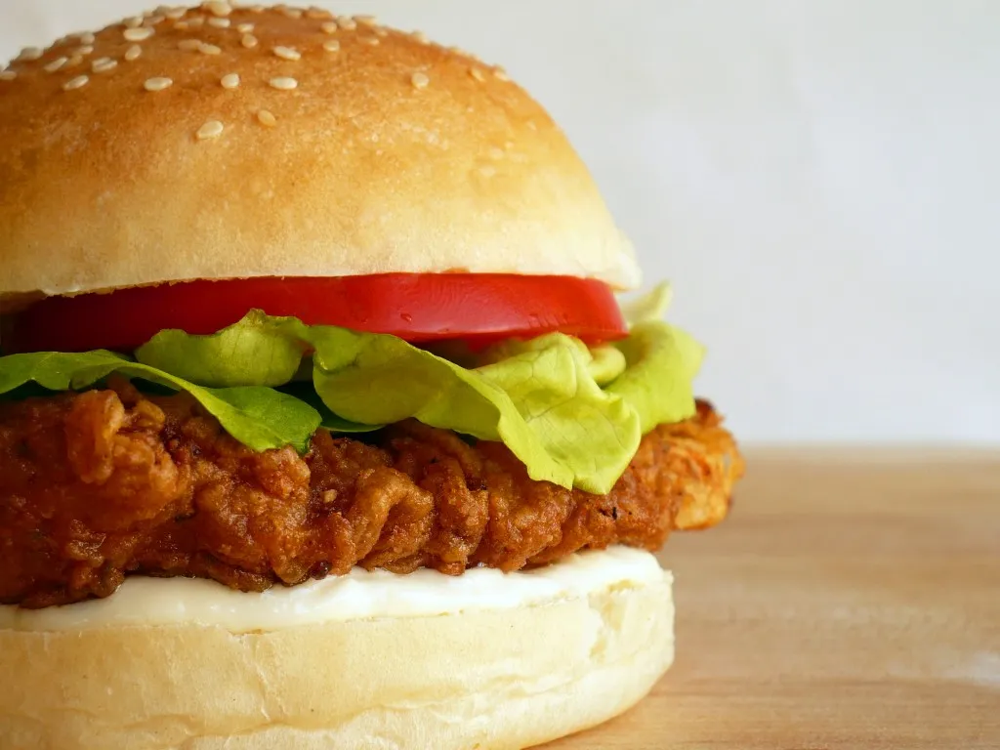

Chiken Burger Recipe

Description
Fast and simple to make burger for only 10 min for you and your family.
Ingredients
- 1 pound ground white meat chicken
- 2 cups coarse to fine fresh bread crumbs, divided (not canned)
- 1/2 cup low-fat milk
- 3 tablespoons grated sweet onion (or finely, finely minced)
- 1/4 teaspoon cayenne pepper
- 3/4 teaspoon coarse grained salt
- Cracked black pepper
- 1 teaspoon olive oil
Step to make it
- Be sure to use ground white meat chicken. If you're buying your ground chicken from the grocery story, ring the bell and ask them if they've got what you're looking for or if they'll grind some chicken breast for you. You can also grind it yourself in a food processor. Remove all excess fat and cartilage from boneless, skinless chicken breast and tenders, cut into 1-inch cubes and pulse until coarsely chopped.
- Use fresh bread crumbs. It only takes a few extra minutes. Remove crusts from good bread or don't remove the crusts, tear into chunks and pulse in a mini chopper or food processor. Make a giant batch and freeze them so next time you can skip this step.
- Place chicken in a mixing bowl. Using a rubber spatula, fold in milk, 1/2 cup bread crumbs, onion, cayenne, salt and pepper. The mixture will be very wet which means it will be a tiny bit icky forming it into patties but forge ahead. Place remaining 1 1/2 cups bread crumbs on a dinner plate or cookie sheet. Divide chicken meat into 4 or 5 piles (you decide which portion size is best for you) and using your hands, shape into patties. Coat each patty with bread crumbs. Heat olive oil in a large non-stick skillet over medium heat and fry patties until golden and cooked through, about 5 minutes per side. Serve immediately.
Back to top
Back to main page